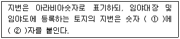
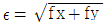
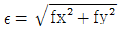
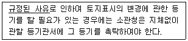
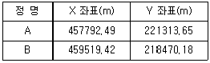

지적기능사 (2008-10-05 기출문제)
1과목: 지적일반(임의구분)
1. 다음 중 지적법상 소관청에 해당되지 않는 것은?
- 시장
- 국토해양부장관
- 군수
- 구청장
(정답률: 79%)

2. 측판측량방법에 의한 세부측량을 교회법으로 하는 경우, 사용할 수 있는 방법이 옳게 짝지어진 것은?
- 도선교회법, 후방교회법
- 후방교회법, 전방교회법
- 전방교회법, 측방교회법
- 측방교회법, 도선교회법
(정답률: 66%)
3. 소관청이 축척변경에 관한 측량을 한 결과 측량전에 비하여 면적의 증감이 있는 경우에는 그 증감면적에 대하여 청산을 하여야 한다. 이 때 청산금을 정하는 기준은?
- 지번별 평당 금액
- 지번별 제곱미터당 금액
- 지번별 공시지가의 1.5배
- 지번별 감정가와 공시지가의 차액
(정답률: 80%)
4. 다음 중 지목의 성질 및 역할로 가장 적합한 내용은?
- 토지의 주된 용도 파악
- 토지의 소유자 파악
- 토지의 규모 파악
- 토지의 필지수 파악
(정답률: 90%)
5. 다음 중 토지소유자가 2 이상인 때에 공유지연명부의 등록사항에 해당하지 않는 것은?
- 토지의 소재
- 지번
- 지목
- 소유권 지분
(정답률: 50%)
6. 조선시대의 토지 등록 장부로 오늘날 토지 대장과 같은 '양안'이 있었는데, 경국대전에 의하면 이 양안은 몇 년 마다 한 번씩 양전을 실시하여 새로운 양안을 작성한다고 하였는가?
- 10년
- 20년
- 30년
- 50년
(정답률: 85%)
7. 소관청이 지적공부의 등록사항에 잘못이 있는지 여부를 직권으로 조사·측량하여 정정할 수 있는 경우가 아닌 것은?
- 토지이동정리결의서의 내용과 다르게 정리된 경우
- 지적공부의 작성 당시 잘못 정리된 경우
- 지적동에 등록된 필지의 면적과 경계의 위치가 모두 잘못된 경우
- 지적측량성과와 다르게 정리된 경우
(정답률: 60%)
8. 지적공부의 등록사항 중 붉은색으로 정리해야 할 대상은?
- 소유자 성명
- 지번 및 지목
- 도곽선 수치
- 토지의 경계선
(정답률: 80%)
9. 다음 중 토지의 고저에 관계없이 수평면 상의 투영만을 가상하여 각 필지의 경계를 등록·공시하는 지적은?
- 평면지적
- 3차원지적
- 입체지적
- 공간지적
(정답률: 80%)
10. 다음 중 현행 지적법에서 임야도에서 사용되고 있는 축척은?
- 1/500
- 1/1,000
- 1/1,200
- 1/3,000
(정답률: 88%)
11. 지적법상 지번의 구성 및 부여방법과 관련한 아래 설명 중 빈 칸에 들어갈 말이 모두 옳은 것은?

- ① 앞, ② 산
- ① 뒤, ② 산
- ① 앞, ② 임
- ① 뒤, ② 임
(정답률: 83%)
12. 지적법규에서 규정하고 있는 필지의 정의가 옳은 것은?
- “필지”라 함은 대통령령이 정하는 바에 의하여 구획되는 토지의 등록단위를 말한다.
- “필지”라 함은 지번을 부여하는 단위지역을 말한다.
- “필지”라 함은 국가가 결정하는 면적단위이다.
- “필지”라 함은 지목이 전·답에 해당하는 토지이다.
(정답률: 66%)
13. 다음 중 지적측량을 하여야 하는 경우가 아닌 것은?
- 지적측량기준점표지를 설치하는 때
- 토지를 합병하고자 하는 때
- 지적측량성과를 검사하는 때
- 경계점을 지상에 복원함에 있어 측량을 필요로 하는 때
(정답률: 77%)
14. 지적공부를 멸실하여 이를 복구하고자 하는 경우, 소관청은 멸실 당시의 지적공부와 가장 부합된다고 인정되는 관계자료에 의하여 토지의 표시에 관한 사항을 복구하여야 한다. 이 때의 복구자료에 해당하지 않는 것은?
- 지적공부의 등본
- 임대계약서
- 토지이동정리결의서
- 측량결과도
(정답률: 73%)
15. 지적공부에 등록된 토지소유자의 변경사항을 정리할 수 있는 자료에 해당하지 않는 것은?
- 등기필통지서
- 등기필증사본
- 등기부등본
- 등기부초본
(정답률: 53%)
16. 다음 중 지적법상 지번부여지역에 관한 설명이 가장 옳은 것은?
- 지번을 부여하는 단위지역으로서 행정구역인 시·군·구와 일치한다.
- 지번은 부여하는 단위지역으로서 동·리 또는 이에 준하는 지역을 말한다.
- 국토해양부령이 정하는 바에 의하여 구획되는 토지의 등록단위를 말한다.
- 지번부여지역을 달리 하더라도 동일지번은 없다.
(정답률: 75%)
17. 1필지로 정할 수 있는 기준에 대한 설명으로 가장 거리가 먼 것은?
- 지번부여지역 안의 토지이어야 함
- 소유자가 둘 이상이어야 함
- 지반이 연속적이이어야 함
- 용도가 동일하여야 함
(정답률: 68%)
18. 다음 중 토지소유자가 지적공부와 등록사항에 잘못이 있음을 발견하고 소관처에 그 정정을 신청함으로 인하여 인접 토지의 경계가 변경되는 경우 그 정정 방법은?
- 정정은 소관청의 직권으로 처리한다.
- 정정은 인접 토지소유자끼리 청산한다.
- 정정은 인접 토지소유자의 승낙서에 의한다.
- 정정은 지적공부만 정정한다.
(정답률: 60%)
19. 다음 중 필지의 배열이 불규칙한 지역에서 진행 순서에 따라 지번을 부여하는 방법으로, 진행 방향으로 지번이 순차적으로 연속되며 농촌 지역의 지번설정에 적합한 방법은?
- 사행식
- 단지식
- 부번식
- 합병식
(정답률: 85%)
20. 다음 중 문화재로 지정된 역사적인 유적·고적·기념물 등을 보존하기 위하여 구획된 토지의 지목은?
- 사적지
- 잡종지
- 묘지
- 유원지
(정답률: 79%)
2과목: 지적측량(임의구분)
21. 방위각법에 의한 지적도근측량에서 연결오차를 구하는 식이 옳은 것은? (단, ε : 연결오차, fx : 종선오차, fy : 횡선오차)


- ε = fx + fy
- ε = fx2 + fy2
(정답률: 86%)
22. 임야조사사업 당시 사정권자로 옳은 것은?
- 임야심사위원회
- 토지조사위원회
- 도지사
- 법원
(정답률: 53%)
23. 다음 중 지번을 부여하는 방법에 대한 설명이 옳은 것은?
- 북서에서 남동으로 순차적으로 부여한다.
- 남동에서 북서로 순차적으로 부여한다.
- 북동에서 남서로 순차적으로 부여한다.
- 남서에서 북동으로 순차적으로 부여한다.
(정답률: 84%)
24. 다음 중 지목을 지적도 및 임야도에 등록하는 때에 표기하여야 하는 부호의 연결이 옳지 않은 것은?
- 공장용지 – 장
- 유원지 – 유
- 철도용지 – 철
- 목장용지 – 목
(정답률: 79%)
25. 경계점좌표등록부의 등록사항으로 옳은 것은?
- 토지소재, 지번, 좌표
- 토지소재, 지번, 지목
- 토지소재, 지번, 면적
- 토지소재, 지번, 축척
(정답률: 73%)
26. 다음 중 축척변경시행지역 안의 토지가 이동이 있는 것으로 보는 시기는?
- 토지공사착수일
- 사업시행공고일
- 축척변경 확정공고일
- 청산금 결정공고일
(정답률: 85%)
27. 지적도의 임야도에 등록하는 도곽선의 폭은 얼마로 제도하여야 하는가?
- 0.1 mm
- 0.2 mm
- 0.3 mm
- 0.5 mm
(정답률: 50%)
28. 소관청이 도면의 관리상 필요한 때에 지번부여지역마다 작성하여 비치하는 일람도에 등재할 사항이 아닌 것은?
- 지번부여지역의 경계
- 도면의 제명 및 축척
- 도곽선과 그 수치
- 지번 및 경계
(정답률: 49%)
29. 지적법상 등기촉탁에 관한 아래 내용 중, 밑줄 친 부분에 해당하는 것과 거리가 먼 경우는?

- 지번변경
- 신규등록
- 축척변경
- 등록사항정정
(정답률: 43%)
30. 지적법령상 직무범위가 지적측량의 보조 또는 도면의 정리와 등사·면적측정 및 도면작성으로 규정되어 있는 지적기술자격취득자는?
- 지적기술사
- 지적기사
- 지적산업기사
- 지적기능사
(정답률: 76%)
31. 공유수면매립지에 토지 중 제방 등을 토지에 편입하여 등록하는 경우 지상경계를 새로이 결정하는 기준은?
- 최대만조위
- 구조물 중앙
- 최저수위
- 바깥족 어깨부분
(정답률: 74%)
32. 토지에 대한 표시(지번, 지목, 면적, 경계 등)를 지적공부에 등록함으로써 공시적 효력을 가진다는 이념은?
- 지적공개주의
- 지적형식주의
- 지적국정주의
- 지적심사주의
(정답률: 74%)
33. 자오선의 북방향(북극)을 기준으로 하여 시계 방향(우회)으로 측정한 각을 무엇이라 하는가?
- 도북 방위각
- 자북 방위각
- 진북 방위각
- 자오선 수차
(정답률: 85%)
34. 사람의 신분에 관한 기록으로 정의되는 호적을 지적과 비교할 때, 호적의 '성명'에 해당하는 역할을 하는 지적의 기재사항은?
- 토지소재
- 지번
- 면적
- 지목
(정답률: 76%)
35. 토지조사사업 당시 확정된 소유자가 다른 토지간의 사정된 경계선을 뜻하는 것으로 사정선이라고도 하는 것은?
- 강계선
- 지역선
- 지적선
- 소유구분선
(정답률: 75%)
36. A·B점의 좌표가 아래와 같을 때, 두 점 사이의 거리는?

- 3435.46 m
- 3326.80 m
- 3427.93 m
- 3363.26 m
(정답률: 60%)
37. 지적공부에 “답”으로 등록되어 있는 것을 토지 이용이 다르게 되어 “대”로 등록하는 것을 무엇이라 하는가?
- 등록전환
- 축척변경
- 신규등록
- 지목변경
(정답률: 63%)
38. 다음 중 지적법상 대장, 도면, 경계점좌표등록부를 시·군·구의 청사 밖으로 반출할 수 있는 경우가 아닌 것은?
- 범죄의 수사 등에 필요한 경우
- 천재·지변, 그 밖에 이에 준하는 재난을 피하기 위하여 필요한 경우
- 지적공부와 등록사항을 마이크로필름·자기디스크, 그 밖에 유사한 매체에 기록·보존하여 지적서고에 보관하지 아니하는 경우
- 시·도지사의 승인을 얻을 경우
(정답률: 52%)
39. 다음 중 제도기구가 아닌 것은?
- 오구
- 스프링콤파스
- 푸라니미터
- 레터링펜
(정답률: 46%)
40. 다음 중 거리와 각을 동시에 관측하여 현장에서 즉시 좌표를 확인함으로 시공 계획에 맞추어 신속한 측량을 할 수 있는 기기는?
- 트랜싯
- 토탈스테이션
- 데오돌라이트
- 전파거리측량기
(정답률: 82%)
3과목: 지적공부정리(임의구분)
41. 지적측량을 기초측량과 세부측량으로 구분할 때, 세부측량은 지적측량기준점 또는 경계점을 기초로 하여 어떤 방법에 의하여야 하는가?
- 전파기측량방법
- 광파기측량방법
- 측판측량방법
- 다각망도선방법
(정답률: 62%)
42. 다음 중 지적법상 지적공부에 해당되지 않는 것은?
- 임야대장
- 공유지연명부
- 토지대장부본
- 지적도
(정답률: 44%)
43. 토지소유자는 등록전환할 토지가 있는 때에 대통령령이 정하는 바에 의하여 그 날부터 몇 일 이내에 소관청에 신청하여야 하는가?
- 15일 이내
- 20일 이내
- 30일 이내
- 60일 이내
(정답률: 62%)
44. 지적측량업무에 종사하는 지적기술자가 그 업무와 관련하여 지적공부를 열람하는 경우 또는 지방자치단체가 업무수행상 필요에 의하여 지적공부와 열람 및 등본교부를 신청하는 경우 소관청에 납부하여야 할 수수료는 얼마인가?
- 300원
- 400원
- 500원
- 무료
(정답률: 68%)
45. 다음 중 지적법상 토지소유자가 토지의 분할을 신청할 수 있는 경우가 아닌 것은?
- 지적공부에 등록딘 1필지의 일부가 형질변경 등으로 용도가 다르게 된 경우
- 소유권 이전, 매매 등을 위하여 필요한 경우
- 토지이용상 불합리한 지상경계를 시정하기 위한 경우
- 공유수면매립으로 토지의 경계를 결정한 경우
(정답률: 37%)
46. 소관청이 지적공부에 등록된 토지가 지형의 변화 등으로 바다로 된 경우 지적공부에 등록된 토지소유자에게 지적공부의 등록말소신청을 하도록 통지하여야 한다. 이 때 토지소유자가 통지받은 날부터 몇 일 이내에 등록말소신처을 하지 아니하는 경우에 이를 말소하는가?
- 15일
- 30일
- 60일
- 90일
(정답률: 68%)
47. 다음 중 축척변경위원회의 위원을 위촉하는 자는?
- 행정안전부 장관
- 도지사
- 소관청
- 국토지리정보원장
(정답률: 68%)
48. 지적도의 축척이 600분의 1인 지역의 토지면적이 70.55m2 으로 산출된 경우, 지적공부에 등록하는 결정면적은 얼마인가?
- 70 m2
- 70.5 m2
- 70.6 m2
- 71 m2
(정답률: 68%)
49. 국토해양부장관이 지적기술자에 대한 징계를 하기 전에 의결을 거쳐야 하는 곳은?
- 지방지적위원회
- 중앙인사위원회
- 중앙지적위원회
- 노동쟁의위원회
(정답률: 74%)
50. 지적제도의 발전단계별 분류에 있어서 퇴에 대한 개인의 권리를 인정하면서부터 토지 세금뿐만 아니라 토지 거래의 안전과 국민의 토지 소유권을 보호하기 위해 만들어진 지적제도는?
- 세지적제도
- 좌표지적제도
- 법지적제도
- 다목적지적제도
(정답률: 75%)
51. 필지별로 당해 토지가 등록된 도면을 용이하게 찾을 수 있도록 비치하고 있는 지번색인표의 등재사항이 아닌 것은?
- 제명
- 지번·도면번호
- 결번
- 축척
(정답률: 61%)
52. 토지소유자가 토지의 합병을 하고자 하는 때에는 대통령령이 정하는 바에 의하여 어디에 신청을 하여야 하는가?
- 대한지적공사
- 소관청
- 국토해양부
- 시·도지사
(정답률: 77%)
53. 지번 및 지목을 제도하는 때에는 어느 정도의 크기로 해야하는가?
- 1~2 mm
- 2~3 mm
- 3~4 mm
- 4~5 mm
(정답률: 76%)
54. 다음 중 지적측량에 사용하는 좌표의 원점이 아닌 것은?
- 동부원점
- 중부원점
- 남부원점
- 서부원점
(정답률: 71%)
55. 축척이 1/600인 지역의 토지분할을 위하여 면적을 정함에 있어서, 토지의 원면적이 100m2 인 경우 분할후 각 필지의 면적의 합계와 분할전 면적과의 오차의 허용범위는?
- 1.655 m2
- 3.174 m2
- 1.295 m2
- 4.⑤6 m2
(정답률: 35%)
56. 경위의측량방법으로 세부측량을 실시한 지역의 필지별 면적측정 방법으로 옳은 것은?
- 삼사법
- 푸라니미터법
- 전자면적계
- 좌표면적계산법
(정답률: 72%)
57. 다음 중 지적법의 목적으로 가장 알맞은 것은?
- 합리적인 토지이용
- 능률적인 지가관리
- 합법적인 토지개발
- 효율적인 토지관리
(정답률: 57%)
58. 다음 중 고속도로 안 휴게소 부지의 지목은 무엇인가?
- 유원지
- 도로
- 잡종지
- 주차장
(정답률: 72%)
59. 다음 중 수치지적에 대한 설명으로 가장 거리가 먼 것은?
- 수학적인 평면직각 종횡선 수치(X·Y좌표)의 형태로 표시한다.
- 도해지적보다 정밀성이 훨씬 떨어진다.
- 열람용의 별도 도면을 작성하여 보관해야 한다.
- 우리나라는 1975년부터 수치지적제도를 도입하였다.
(정답률: 76%)
60. 다음 중 지적법상 토지대장 또는 임야대장에 등록하는 토지가 부동산등기법에 의하여 대지권등기가 된 때에 대지권등록부에 등록하는 사항에 해당하지 않는 것은?
- 토지의 소재
- 대지권 비율
- 지번
- 지목
(정답률: 36%)